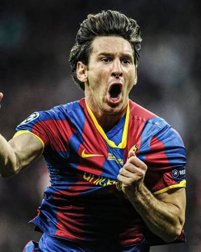
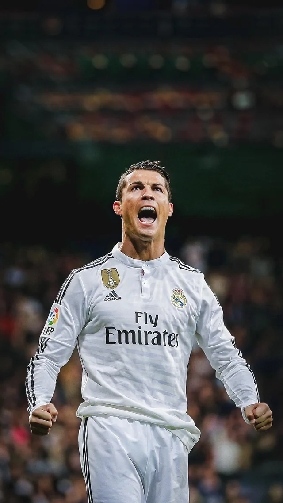

A multi-generational biographical deep dive documenting the absolute legends, tactical masterminds, and dynamic architects who defined football's global supremacy.

Lionel Andrés Messi, born on June 24, 1987, in Rosario, Argentina, is universally recognized as one of the greatest football players in the history of mankind. Diagnosed with a growth hormone deficiency as a child, his journey into professional sports was marked by early adversity. His immense raw potential caught the attention of FC Barcelona, who famously agreed to pay for his medical treatments if he relocated to Spain. Joining the legendary La Masia academy, Messi scaled through the youth ranks at a breakneck pace, making his competitive senior debut in 2004 at the tender age of 17.
Over the course of the next seventeen years, Messi transformed FC Barcelona into a relentless global juggernaut. Operating with an impossibly low center of gravity, mesmerizing dribbling style, and elite football intelligence, he completely redefined the parameters of modern attacking play. His record-breaking synergy with managers like Pep Guardiola unlocked new structural paradigms on the pitch. Messi led Barcelona to a stunning haul of 10 La Liga titles, 7 Copa del Rey trophies, and 4 legendary UEFA Champions League crowns, establishing a golden age of football dominance.
Beyond his club triumphs, Messi's legacy is deeply intertwined with the Argentina national squad. After facing painful heartbreaks in multiple international finals, he engineered a historic late-career renaissance. He lifted the Copa América in 2021 before achieving his ultimate destiny at the FIFA World Cup in Qatar, where he guided Argentina to world glory in one of the greatest sporting spectacles ever recorded. Transitioning to Inter Miami in Major League Soccer, Messi continues to amaze fans globally, leaving behind a permanent cultural imprint on the global game.
